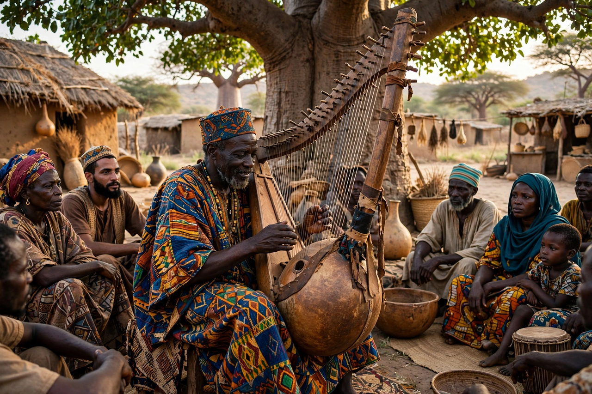

| Griot | |
| Region | West Africa (Mali, Senegal, Guinea, Gambia, Burkina Faso, Niger, northern Nigeria) |
|---|---|
| Local names | Jali / jeli (Mandé), géwël (Wolof), iggawen (Hassaniya) |
| Instruments | Kora, balafon, ngoni, xalam |
| Role | Hereditary praise-singer, oral historian, genealogist, mediator, musician |

A griot (French: [ɡʁi.o]; in Mandé languages jali or jeli) is a West African hereditary historian, praise singer, poet, storyteller and musician. Griots form an endogamous occupational caste within Mandé and neighbouring societies, and have for centuries served as the living memory of their communities.
Griots preserve and perform genealogies, royal chronicles, clan histories and epic narratives. They traditionally serve as advisers, diplomats and mediators for royal and noble patrons, praise patrons in song on ceremonial occasions, and compose songs marking births, marriages, funerals and installations. Their mastery of oral tradition was famously described by the Malian writer Amadou Hampâté Bâ: "When an old man dies, a library burns."
The best-known griot performance is the Epic of Sundiata, recounting how Sundiata Keita founded the Mali Empire in the 13th century. A celebrated version, performed by the griot Djeli Mamoudou Kouyaté, was recorded and published by D. T. Niane as Sundiata: An Epic of Old Mali (1960).
Griots accompany themselves on instruments such as the 21-string kora, the balafon (wooden xylophone) and the ngoni lute. Many modern griots have become international recording artists without abandoning their hereditary role; renowned kora players include Toumani Diabaté and Ballaké Sissoko of Mali, and women griottes (female griots) such as Kandia Kouyaté are famed singers.